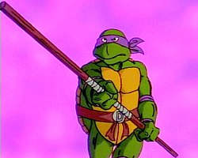

Донателло (англ. Donatello), Дон (англ. Don) или Донни (англ. Donnie) — один из четырёх главных героев франшизы «Черепашки-ниндзя». В большинстве адаптаций Донателло второй / третий по старшинству среди братьев-мутантов, а также заместитель лидера в лице Леонардо. Главная особенность Донателло заключается в его гениальном интеллекте, благодаря которому он изобретает различные гаджеты для членов команды и другие передовые изобретения. Он уступает братьям по силе, поскольку по большей части полагается на науку и технологии. В бою Донателло орудует посохом Бо.
Как и его братья, Донателло получил своё имя в честь итальянского художника Эпохи Возрождения, в данном случае скульптора Донато ди Никколо ди Бетто Барди. В оригинальных комиксах Mirage Studios он носил красную повязку, однако затем его отличительным цветом стал фиолетовый.